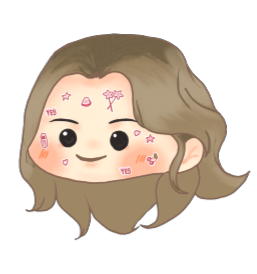

Name: Alexandria Danielle DM. Cordero
Nickname: Alexa
Favorite CMSC subject so far and why: It would have to be CMSC 22 because I was able to make something that I didn't
I could ever make. Although the subject was a bit difficult, being able to see the end product made me feel accomplished.
Favorite GE so far and why: I haven't taken as much GE as most students in my batch but I can say that the one that's caught my eye
is Ethics 1 because it tackles about the morality of people and I find it fascinating how diverse people really are in terms of mindset.
Favorite programming language so far and why: it's safe to say that my favorite is Python because it's syntax is relatively easier
compared to those that I have learned as I progress in this course.
Favorite food: Pizza!!
Hobbies: Watching Anime and K-pop groups' variety shows, listening to music, and playing Valorant
Childhood dream: I had always been indecisive so my aspirations shift most of the time but the endgame of it all was that I was living life comfortably so I guess my childhood dream was to be someone rich enough to live a carefree life.